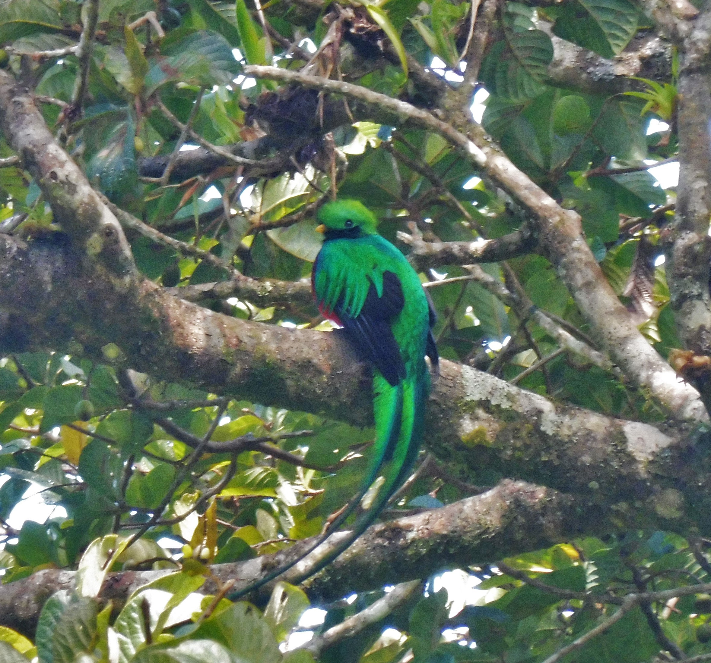

This was the first big trip I ever planned. Six weeks across China and Hongkong with my backpack and two years of university Mandarin in my pocket. I had practised all the phrases for ordering food, buying train tickets and asking for directions.
Little did I know, that I would arrive in Beijing, get off at the correct train stop but then tried to ask for directions to my hostel and would not be understood at all. Imagine this, all the street signs are written in characters you cannot read and there is no internet to translate. What do you do? So, I showed my hostel characters that I had written down to people until someone knew the hostel and kindly escorted me there.
No Google or Social media
The thing about being in China in 2018 was that most of the digital infrastructure that I know did not work. The Great Firewall, which is the colloquial name for the Chinese government's internet filtering system, blocks most major Western internet services.Google was unavailable, there was no YouTube, WhatsApp, Facebook, Instagram, not even mail programs worked. Most foreign news sites are blocked and even Wikipedia was blocked. What worked instead was a parallel internet. WeChat is an all-purpose Chinese app that did everything from messaging and payments to restaurant booking and identity verification. Baidu replaced Google for search and that only in Mandarin.
That meant that I could not just quickly look something up and very quickly switched to analogue travel mode. I realised that the notion that I had of the Internet was a specifically Western perspective and there were others that I had not considered before.
Slow trains
I crossed China by train. I wanted to take the slow trains because I wanted to see the country from the local way (and of course, that was a lot cheaper as well). The slow trains run at sixty or eighty kilometres an hour and stop in every town that has a station. A typical slow train has hard-seat carriages (cheapest, no sleep), hard-sleeper carriages (open compartments of six bunks each) and soft-sleeper carriages (closed compartments of four bunks, more expensive, I never used one).
For overnight journeys, I would usually choose the hard-sleeper compartment in which you cannot really avoid the strangers around you. Within the first hour, the snacks and glances towards me came out. Within the first two hours, the questions started. Where are you from? Are you married? Can you write your name in Chinese characters? I wrote my name in Chinese characters approximately forty times in the first week and it never failed to produce joy. After ten hours or more of journey, the compartment almost felt like home since everybody was coming and going and talking to each other.
While taking the slow train, I realised the dialect boundaries that the train line crossed. The standard Mandarin I had studied at university is the official language of China, but it is not, in practice, what most people speak at home. Instead there are local varieties such as Wu (in Shanghai), Min (in Fujian), Yue (Cantonese in the south) or Xiang (in Hunan) and dozens of others which are not necessarily close to Mandarin. On top of those regional accents, there are also accents within Mandarin itself and the result is that I could barely understand anything even though I knew quite a lot of words. .
Walls, monasteries and soldiers
The first three stops on my trip were the historical stops: Beijing, Xi'an, Luoyang.Beijing
Beijing’s history is impressive. The Forbidden City, the imperial palace that housed twenty-four emperors of the Ming and Qing dynasties between 1420 and 1912, includes 900 buildings, 8000 rooms and walking from south to north takes an hour. The last emperor, Puyi, was three years old when he took the throne and six when he had to abdicate by the new Republic of China in 1912. He still kept living inside the palace for another twelve years until he was evicted in 1924. The palace then became a museum and in 1949 Mao Zedong stood on the Tiananmen gate at the southern entrance and declared the founding of the People's Republic of China, looking out across the square that has been the political centre of the country ever since. His portrait still hangs over that gate and I walked underneath it on the way in.
The Great Wall of China was of course another thing that I had to visit. I had asked at the hostel which section to visit and was told to go to Mutianyu rather than the closer Badaling since Mutianyu is supposed to be more hidden and quieter. The Great wall was designed to repel Mongol raids, especially after the Ming Dynasty (1368-1644) was established, under the guidance of generals such as Xu Da and later Qi Jiguan. I walked up thousands of stairs and then walked along the wall for about eight hours and saw maybe twenty other people in that time. The wall itself is long, made from stone and with towers in regular intervals and once you look further away than just the section where you are standing, the scale is enormous.

Xi'an
Xi'an, two days southwest from Beijing by slow train, is older than Beijing since it was the capital of thirteen dynasties, including the Tang dynasty (618–907 CE) when Xi'an was probably the largest city in the world. Its Ming-dynasty city walls, built in the 1370s, still completely encircle the old city and from the wall you can see the modern city stretching outwards in every direction and inside the wall you can see the old grid of streets that has survived more or less intact for six hundred years.
The main visitor point in Xi'an is the Terracotta Army. It was discovered in 1974 by a farmer digging a well. It consists of roughly eight thousand life-sized clay soldiers, each one with an individual face which were buried in 210 BC alongside Qin Shi Huang, the first emperor to unify China, to guard him in the afterlife. The figures were originally painted in bright colours and almost all of the paint flaked off within minutes of them being exposed to dry air after two thousand years underground and left them with a muted earth-coloured tone. Going through the rows of those soldiers was an otherworldly experience.
Luoyang
Luoyang, another six hours south by train, is older still and quieter. The reason to go is the Longmen Grottoes where over a hundred thousand statues of Buddha were carved into the limestone cliffs along the Yi River, between the fifth and twelfth centuries. The biggest one, the Vairocana Buddha at Fengxian Temple, is seventeen metres tall and was commissioned by the Empress Wu Zetian in the seventh century. It is said to be modelled on her own face. Most of the smaller statues have had their heads broken off during the Tang persecution of Buddhism in the ninth century and by the Cultural Revolution in the twentieth century.
Another thing to see in Luoyang is the Shaolin Monastery which is famous for being the legendary birthplace of Chan Buddhism (which became Zen in Japan) and being the legendary origin of Chinese kung fu. Both legends are disputed by historians but the visit was impressive since it still is a working monastery that also runs the largest martial arts school in the world. There are hundreds of children training in courtyards and it was not rare to see monks in grey robes having conversations while children did flips down the corridor behind them.
Wuyishan and the first Chinese tea
The Wuyi mountains in northern Fujian are one of the most famous tea regions in China. The karst landscape is covered in tea fields while the rivers are crossed by bamboo rafts that float down for nine bends. As soon as I arrived in Wuyishan, I was met with a massive amount of small tea shops and of course I wanted to try them all. So, I just chose one very randomly and tried to ask what type of tea they sold. The woman in the shop probably just understood my questioning Chá?, sat me down on a stool, put a kettle on and began the tea ceremony.
I did not really understand what she was saying but the ceremony itself and the different tea tastes were explanatory enough. There are six categories of Chinese tea, all from the same plant and what makes them different is what happens to the leaf after it is picked, by how much it is allowed to oxidise and how it is dried. White tea (my favourite) is the least processed and the leaf is just dried. Green tea is heated quickly to stop oxidation. Oolong tea is partially oxidised. Red tea is fully oxidised and Pu-erh tea is fermented over months or years. Yellow tea is rare and slow-processed.
The Wuyi mountains specialise in oolong tea specifically the yancha or rock teas which are grown in the cracks between the karst cliffs and have a faintly mineral taste to them. Since I favoured the white and red tea, I tried many different types of them, in a multitude of tea shops that at one point I had to stop because I simply could not drink anything anymore. This was the moment that started a fascination with tea for me.

Má là
Chengdu is the capital of Sichuan and Sichuan is where the food gets seriously spicy. It is not just spicy but it is something else, for which Mandarin has a word that English does not really have. The word is má là (麻辣). Là (辣) means hot in the chilli sense and má (麻) means numb. It is the sensation produced by Sichuan peppercorns, which contain a compound called hydroxy-alpha-sanshool that causes the lips and tongue to tingle and slightly buzz as if a very mild electric current were running through them. The two sensations of chili and Sicuan peppercorns are completely different and Sichuan cuisine combines them perfectly, so that you experience both at once.
On my first night in Chengdu I ate hotpot which is a Sichuan dish of a bubbling pot of broth, divided into compartments (usually a má là compartment and a clear-broth compartment) into which you dunk raw ingredients to cook them yourself. The ingredients are very varied and since I did not know what to order, I just told the waiter to choose for me which he did perfectly. I had thinly sliced beef, pork belly, lotus root, mushrooms, tofu, lettuces, fish balls and several things I could not identify but which were all tasty. You cook them in the bubbling oil, fish them out with chopsticks and dip them in a sesame-and-garlic sauce on the side. The longer you eat, the spicier it gets.
A boat trip in a cabin of six
The Yangtze is the longest river in Asia and the third-longest in the world and the standard tourist activity on it is a multi-day cruise through the Three Gorges. That is a sequence of dramatic narrow river canyons in central China, considered some of the most scenic landscapes in the country. Since I was travelling on a budget, I took the local boat.
It was slower and configured around the assumption that its passengers would mostly be Chinese travellers between cities. The cabin I was assigned to was a six-berth shared sleeper and a quick look around the boat showed me big rusted holes all along the boat which did not really boost my confidence. Since the boat had no food aboard, I had to bring enough food for five days with me which consisted mostly of the famous Chinese instant noodles.
The boat stopped at several places along the way. The Three Gorges Dam, near Yichang, is the largest hydroelectric dam in the world, completed in 2012 . It has a lock system that lifts boats over the dam which takes about four hours and involves a sequence of five chambers, each one filling with water to lift you a bit higher. The dam itself is two kilometres wide and 185 metres tall, and it has been the subject of decades of controversy about its environmental and human costs since over a million people were displaced by the reservoir and many historic sites were submerged.
The river then narrows into the Three Gorges Qutang, Wu and Xiling. The cliffs rise vertically out of the water on either side, sometimes for over a thousand metres. I also took a smaller boat into the Little Three Gorges, a side branch of the Daning River, where the cliffs were narrower and closer and the water was a colder green than the main Yangtze's brown. We also stopped at a small temple built into a riverside rock formation in the Ming dynasty. The reservoir behind the dam has raised the water level so much that the temple now sits on what is effectively an island, and the path to it goes across a long footbridge. I climbed to the top. The view was of water in every direction, including over places that, until 2003, had been a small valley with houses in it.
After the boat I went to Zhangjiajie, a national park in Hunan province, famous mostly because the floating mountains in Avatar were modelled on its sandstone pillar formations. I hiked for three days around misty pillar formations which added to the mystery of that place.
Hong Kong
Hong Kong was the last week of the trip and it was a very different country. The difference between Hong Kong and the mainland was huge since Hong Kong was a Special Administrative Region of China, with its own currency, its own border control and its own relationship to the Chinese internet which is to say, the Chinese internet did not apply there. All the apps and search engines that I grew accustomed to not work, worked again.
Linguistically, Hong Kong is a Cantonese-speaking city. Cantonese (Yue) is one of the major Chinese languages, not even close to Mandarin in spoken form, although the written language uses largely the same characters. But Hong Kong uses traditional Chinese characters which are the older, more elaborate form while the mainland switched to simplified in the 1950s. My Mandarin was largely useless in Hong Kong, where most people I met spoke either Cantonese among themselves or English to me.
The central districts of Hong Kong are the famous part known for its the vertical city, the harbour with its skyscraper wall on either side and the hills that rise straight out of the water. What I remember most about Hong Kong, though, is the small islands. Hong Kong is not just the central island and Kowloon. It is 263 outlying islands, mostly small and which are accessible by ferries that run frequently. I spent three days exploring them.
Po Toi Island and Tung Lung Chau Island were my favourites. On Po Toi I walked along the coastal paths and came across several tiny abandoned villages that (according to fishermen) are haunted by ghosts. Tung Lung Chau was quite different since it was a more adventurous day trip with a hike along the steep cliffs. What I found really interesting was seeing the ancient rock carvings there, which date back centuries and are thought to connect to early coastal communities in southern China.
By the time I flew home, I realised that no matter what I imagined this trip would be like, it definitely overthrew all my expectations. The moments I remember most clearly are the moments when I had to rely on strangers or sat somewhere, quietly, and observed a culture so different from my own and yet so similar in other aspects.